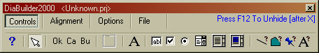
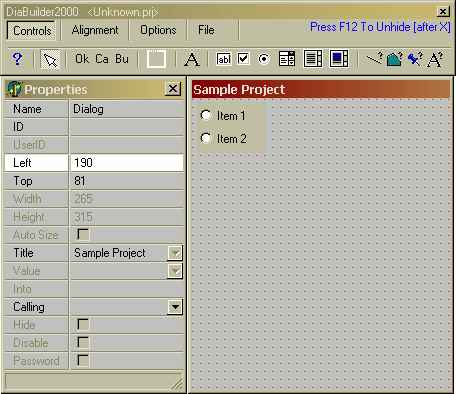
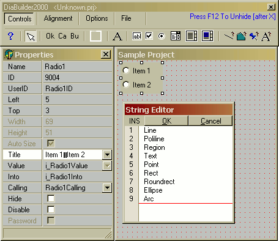
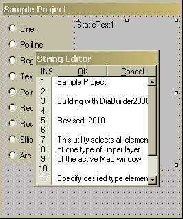
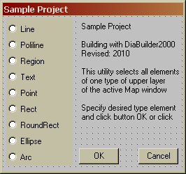
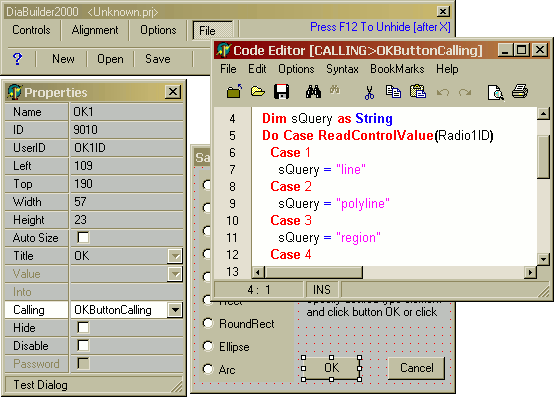
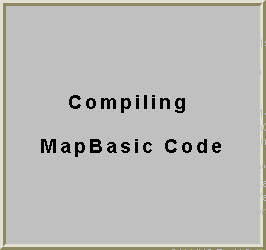
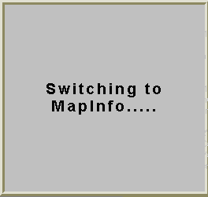

Редактор диалогов языка MapBasic: обзор и пример использования программы DiaBuilder 2000
- Обзор DiaBuilder 2000
- Возможности программы
- Загрузка программы
- Пример использования DiaBuilder 2000
- Список литературы
Обзор DiaBuilder 2000
Любой программист, пишущий приложения под MapInfo Professional, рано или поздно приходит в отчаянье от выполнения одной, весьма тягомотной, обязанности. А именно – от создания диалоговых окон на языке MapBasic. Эта рутинная кропотливая работа отъедает значительный кусок и времени, и программного кода.
Но. Вопрос создания диалогов MapBasic давно решен! Работая в свое свободное время, после долгих, жарких дней установки системы E911 в южном Техасе, бизнесмен и программист Трей Паттильо (Trey Pattillo) выпустил в 2000 году свой редактор диалогов для MapBasic – DiaBuilder 2000. Особенно приятен тот факт, что программа, изначально выпущенная как коммерческий продукт, с 2009 года стала полностью freeware, т.е. бесплатной.
DiaBuilder полностью поддерживает все пятнадцать элементов управления MapBasic и все их свойства, а также соблюдает все ограничения диалогов MapBasic. Операции просты и понятны: что вы видите, то и получаете. Контролы выбираются на панели инструментов и помещаются на форму простым нажатием мыши. Размеры и положения элементов можно изменять, а правый клик мыши вызывает меню «Свойства», в котором можно задать все параметры в точности.
Также DiaBuilder имеет развитые средства выравнивания элементов диалога. Можно выровнять контрол по отношению к другим по центру, расставить по сетке или распределить равномерно. Можно задавать последовательность обхода элементов и еще многое другое, не менее полезное и приятное.
Никто не любит возиться с настройками, но DiaBuilder позволяет настроить все, от шага и цвета сетки и размеров элементов по умолчанию, до папок размещения проектов и файлов компилятора, так что пренебрегать этой возможностью программы не стоит.
За несколько минут вы можете создать красивый и качественный диалог MapBasic и сразу же увидеть, как он будет выглядеть. Разрабатывая программу через интерфейс DiaBuilder, вы не только создаете форму диалога, но и файлы переменных и объявлений, настраиваете управление идентификаторами и структуру кода подпрограмм. В процессе разработки можно включать в код свои модули, добавлять различные файлы, не заботясь об объявлении их в коде.
Возможности программы
Итак, что же имеет в своем арсенале DiaBuilder?
- полный визуальный контроль над созданием ваших диалогов MapBasic;
- настройка размеров, положения, выравнивания, доступности, заголовков, пароля и доступности элемента, а также значений, переменных и вызовов (value, into, calling);
- одновременное перемещение и настройка группы контролов;
- автоматическое создание имен переменных и идентификаторов контролов;
- полноценное использование системных переменных;
- автоматическое создание блоков подпрограмм – остается только добавить ваш код;
- встроенный редактор кода с цветной подсветкой синтаксиса;
- сохранение и загрузка проектов для последующих изменений;
- предпросмотр сформированных диалогов;
- компиляция и запуск программы (требуется установленный MapBasic).
Что добавляет прелести программе – так это ее полная портабельность (portable). DiaBuilder, хотя и имеет файл инсталляции, переносится на другой компьютер простым копированием и не оставляет следов в реестре.
Интерфейс программы английский и, к сожалению, возможность русификации автором не предусмотрена. С другой стороны, продуманность и интуитивная понятность меню и диалогов DiaBuilder позволяют беспроблемно освоить программу любому, мало-мальски знакомому с основами языка, человеку.
Загрузка программы
Как уже упоминалось выше, с 2009 года автор, Трей Паттильо, сделал программу бесплатной (против 40$ ранее). Теперь DiaBuilder 2000 можно абсолютно свободно, без оплаты и регистрации загрузить на сайте автора.
Также программу в виде ZIP-архива (исполняемые файлы и справочная система) можно загрузить на сайте GLab©2007
Помимо редактора диалогов DiaBuilder 2000 Трей Паттильо написал великолепный редактор языка MapBasic – MB Coder, с полноценной подсветкой синтаксиса языка, подсказками, деревом проекта и многими другими, важными и нужными разработчику функциями. Более полная информация о редакторе представлена в разделе загрузок сайта.
Пример использования DiaBuilder 2000 – создание диалога
При первом запуске программа создаст файл настроек diabuilder.ini, на что, возможно, потребуется некоторое время. После полной загрузки, интерфейс DiaBuilder будет представлен двумя окнами: панелью инструментов и начальной формой диалога. На панели инструментов находятся 4 вкладками:
- Controls – элементы управления;
- Alignment – выравнивание и расстановка элементов;
- Options – опции и настройки программы;
- File – управление файлами проекта.
Учитывая, что программа не всегда находит путь к папке компилятора MapBasic, стоит проверить настройки путей (меню «Options» → «Settings»).
После проверки и окончательной настройки программы можно перейти к созданию нашего первого диалога. Это будет утилита, которая выбирает из открытой таблицы все объекты одного типа (полигоны, символы, текст, etc.) Подробно вопрос выбора однотипных объектов средствами самой MapInfo подробно рассматривался в GIS MapInfo FAQ.
Перейдя на вкладку «Controls», выберем элемент управления Radio Group. Простым щелчком мыши на свободном поле формы добавим этот элемент. Правый клик откроет дополнительное окно – редактор свойств элементов. Должна получиться примерно такая картина:
Активировав щелчком по полю Title в окне редактора свойств диалог ввода подписей элемента, заполним его сообразно примеру. Значение свойства UserID – Radio1ID запомним или запишем в сторонке, так как оно нам потребуется для обращения к этому элементу впоследствии.
Таким же, как описанный выше, способом, добавим на форму и настроим элементы StaticText и 2 командные кнопки: OK Button и Cancel Button.
 Выделив на форме элемент OK Button, в Редакторе Свойств активизируем свойство Calling. Откроется встроенный редактор кода, в который можно сразу же, не заботясь ни об объявлении констант, ни об определениях, ни даже об объявлении процедуры (Sub … End Sub), сразу же писать код.
Вот код, который позволит выбрать все объекты одного типа в первой открытой таблице.
Для начала делаем проверку на наличие открытых таблиц:
If Numtables( ) < 1 Then End Program End If
Затем объявляем внутреннюю переменную и записываем в нее строку в зависимости от выбранной пользователем опции Radio Group (вызов свойств контрола по UserID):
Dim sQuery as String Do Case ReadControlValue(Radio1ID) Case 1 sQuery = "line" Case 2 sQuery = "polyline" Case 3 sQuery = "region" Case 4 sQuery = "text" Case 5 sQuery = "point" Case 6 sQuery = "rect" Case 7 sQuery = "roundrect" Case 8 sQuery = "ellipse" Case 9 sQuery = "arc" End Case
И, наконец, составляем запрос и запускаем команду на выполнение:
Run Command "Select * From " & TableInfo(1,TAB_INFO_NAME) & " Where Str$(obj)=""" & sQuery & """ Into Selection"
Все! Программа готова. Переходим на вкладку «File» панели инструментов, выбираем опцию «Test», ждем …
 Готово. Программа создана, скомпилирована и ей можно пользоваться. На все операции у меня ушло не более 5 минут.
Загрузить готовый проект рассмотренного примера (2,97 KB)
Загрузить скомпилированную утилиту (1,54 KB)
Список литературы
- Bill Thoen. An End to Dialog Slog in MapBasic Development//GISnet, - 2000
- Trey Pattillo. DiaBuilder2000. Order Now - 2009
- MapBasic. Среда разработки. Руководство пользователя. - Нью-Йорк: MapInfo Corp., 2000.